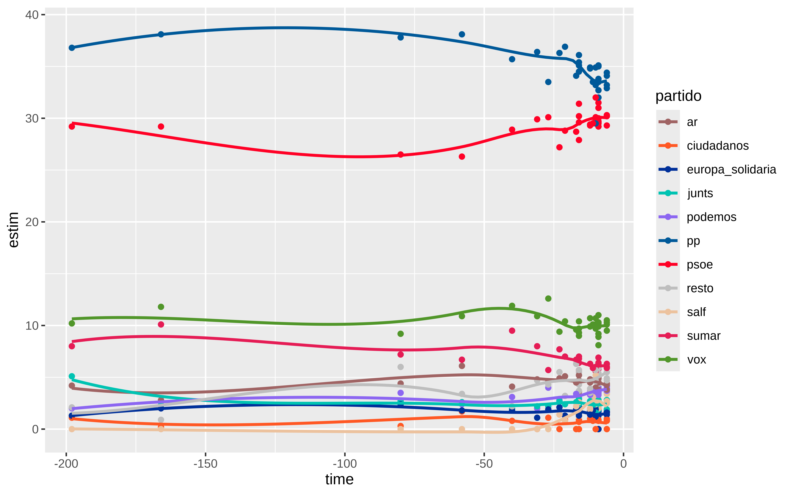
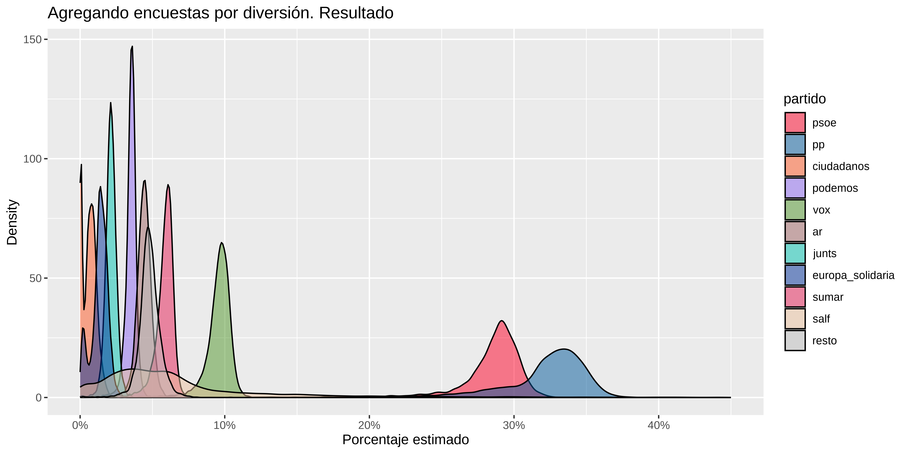

Show the code
library(tidyverse)
# no sé pq lo tenia separado por ; y con , como decimal
df <- read_csv2(here::here("2024/06/european_polls_spain.csv")) |>
select(empresa, fecha, everything())José Luis Cañadas Reche
June 8, 2024
Supongo que se trata de reminiscencias de los tiempos en que curraba en Córdoba, con mi jefe y amigo “el Truji”, pero de vez en cuando me gusta asomarme a las encuestas de estimación de voto.
Ya en algunos post anteriores como en este de cocinando contaba de manera simple algunas de las recetas que se usan para la estimación de voto, básicamente contaba temas de post-estratificación utilizando información auxiliar.
Más recientemente en Meta-análisis. Agregando encuestas hacía un ejercicio de como agregar diferentes encuestas para las elecciones generales de Julio. Y como este finde ando un poco febril por vete tú a saber qué bicho, pues he decidido repetir el ejercicio de meta-análisis para las elecciones europeas de mañana.
Así que se aplica toda la literatura que puse en el post de julio de 2023 y por lo tanto voy a poner más código que otra cosa.
Los datos que necesito para este ejercicio son simples. A saber.
A partir del n de cada encuesta y de la estimación porcentual a cada partido obtengo grosso modo el número de encuestados que dice que va a votar a cada partido en cada encuesta. Con estos datos ya puedo hacer un modelo multinomial bayesiano que me sirva como agregador de encuestas. Vamos al lío
Los datos los he sacado de la wikipedia, aqui tal y como amablemente me sugirió Kiko Llaneras.
Lo vemos en forma de tabla html, son unas 31 encuestas
Para quien no lo sepa hay algunas coaliciones curiosas. * AR: Ahora república. Están ERC y el BNG por ejemplo * Europa Solidaria: Dónde está el pnv * Salf: Se acabó la fiesta, el partido de Alvise que las encuestas más recientes lo están teniendo en cuenta
Vamos a tratar un poco los datos.
Al pacma lo voy a meter junto con “resto”. Este es mi blog y aquí no impera la democracia, se siente.
También calculo una columna time que indica los días que faltaban para las elecciones desde la fecha de publicación.
df_new <- df |>
mutate(resto = resto + pacma) |>
select(-pacma, - Tot_pct) |>
pivot_longer(c(psoe, pp, ciudadanos, podemos, vox, ar, junts, europa_solidaria,
sumar, salf, resto)) |>
mutate(votos = n * value / 100) |>
rename(partido = name,
estim = value) |>
mutate(
time = fecha - ymd("2024-06-09")
)
DT::datatable(df_new)Podemos pintar algo, dónde se ve que la distancia entre PSOE y PP ha disminuido conforme se acercaba el día 9
colores <- c(
"psoe" = "#FF0126",
"pp" = "#005999",
"ciudadanos" = "#FF5824",
"podemos" = "#8C66F1",
"vox" = "#51962A",
"ar" = "#A06464",
"junts" = "#00C3B2",
"europa_solidaria" = "#00309A",
"sumar" = "#E51C55",
"salf" = "#ECC29E",
"resto" = "grey"
)
df_new |>
ggplot(aes(x = time, y = estim,color = partido )) +
geom_point() +
scale_color_manual(values = colores) +
geom_smooth(se = FALSE)
Para hacer el modelo multinomial necesito que la columna votos tenga valores enteros y que el n sea la suma, así que voy a pivotar y poner todo en orden
df_wider <- df_new |>
select(-estim) |>
pivot_wider( id_cols = c(empresa, n, time),
names_from = partido,
values_from = votos) |>
mutate(across(c(psoe, pp, ciudadanos,podemos,
vox, ar, junts, europa_solidaria,
sumar, salf, resto), round)) |>
mutate(
n = psoe + pp + ciudadanos + podemos +
vox + ar + junts + europa_solidaria +
sumar + salf + resto
)
DT::datatable(df_wider)El modelo lo voy a ajustar usando brms y necesito tener una columna que sea la concatenación de los diferentes votos a cada partido.
Y con esto ya puedo
En la especificación del modelo pongo la empresa como efecto aleatorio y añado también un término general que recoja la tendencia temporal global y por empresa encuestadora.
Vemos las priors por defecto que usa brms. Lo suyo sería estudiar con cuidado todo este tema para elegir unas priors informativas si se pudiera.
# vemos las priors por defecto qeu h
(priors <- get_prior(formula, df_wider, family = multinomial()))
#> prior class coef group resp dpar nlpar
#> lkj(1) cor
#> lkj(1) cor empresa
#> (flat) b muar
#> (flat) b time muar
#> student_t(3, 0, 2.5) Intercept muar
#> student_t(3, 0, 2.5) sd muar
#> student_t(3, 0, 2.5) sd empresa muar
#> student_t(3, 0, 2.5) sd Intercept empresa muar
#> student_t(3, 0, 2.5) sd time empresa muar
#> (flat) b muciudadanos
#> (flat) b time muciudadanos
#> student_t(3, 0, 2.5) Intercept muciudadanos
#> student_t(3, 0, 2.5) sd muciudadanos
#> student_t(3, 0, 2.5) sd empresa muciudadanos
#> student_t(3, 0, 2.5) sd Intercept empresa muciudadanos
#> student_t(3, 0, 2.5) sd time empresa muciudadanos
#> (flat) b mueuropasolidaria
#> (flat) b time mueuropasolidaria
#> student_t(3, 0, 2.5) Intercept mueuropasolidaria
#> student_t(3, 0, 2.5) sd mueuropasolidaria
#> student_t(3, 0, 2.5) sd empresa mueuropasolidaria
#> student_t(3, 0, 2.5) sd Intercept empresa mueuropasolidaria
#> student_t(3, 0, 2.5) sd time empresa mueuropasolidaria
#> (flat) b mujunts
#> (flat) b time mujunts
#> student_t(3, 0, 2.5) Intercept mujunts
#> student_t(3, 0, 2.5) sd mujunts
#> student_t(3, 0, 2.5) sd empresa mujunts
#> student_t(3, 0, 2.5) sd Intercept empresa mujunts
#> student_t(3, 0, 2.5) sd time empresa mujunts
#> (flat) b mupodemos
#> (flat) b time mupodemos
#> student_t(3, 0, 2.5) Intercept mupodemos
#> student_t(3, 0, 2.5) sd mupodemos
#> student_t(3, 0, 2.5) sd empresa mupodemos
#> student_t(3, 0, 2.5) sd Intercept empresa mupodemos
#> student_t(3, 0, 2.5) sd time empresa mupodemos
#> (flat) b mupp
#> (flat) b time mupp
#> student_t(3, 0, 2.5) Intercept mupp
#> student_t(3, 0, 2.5) sd mupp
#> student_t(3, 0, 2.5) sd empresa mupp
#> student_t(3, 0, 2.5) sd Intercept empresa mupp
#> student_t(3, 0, 2.5) sd time empresa mupp
#> (flat) b muresto
#> (flat) b time muresto
#> student_t(3, 0, 2.5) Intercept muresto
#> student_t(3, 0, 2.5) sd muresto
#> student_t(3, 0, 2.5) sd empresa muresto
#> student_t(3, 0, 2.5) sd Intercept empresa muresto
#> student_t(3, 0, 2.5) sd time empresa muresto
#> (flat) b musalf
#> (flat) b time musalf
#> student_t(3, 0, 2.5) Intercept musalf
#> student_t(3, 0, 2.5) sd musalf
#> student_t(3, 0, 2.5) sd empresa musalf
#> student_t(3, 0, 2.5) sd Intercept empresa musalf
#> student_t(3, 0, 2.5) sd time empresa musalf
#> (flat) b musumar
#> (flat) b time musumar
#> student_t(3, 0, 2.5) Intercept musumar
#> student_t(3, 0, 2.5) sd musumar
#> student_t(3, 0, 2.5) sd empresa musumar
#> student_t(3, 0, 2.5) sd Intercept empresa musumar
#> student_t(3, 0, 2.5) sd time empresa musumar
#> (flat) b muvox
#> (flat) b time muvox
#> student_t(3, 0, 2.5) Intercept muvox
#> student_t(3, 0, 2.5) sd muvox
#> student_t(3, 0, 2.5) sd empresa muvox
#> student_t(3, 0, 2.5) sd Intercept empresa muvox
#> student_t(3, 0, 2.5) sd time empresa muvox
#> lb ub source
#> default
#> (vectorized)
#> default
#> (vectorized)
#> default
#> 0 default
#> 0 (vectorized)
#> 0 (vectorized)
#> 0 (vectorized)
#> default
#> (vectorized)
#> default
#> 0 default
#> 0 (vectorized)
#> 0 (vectorized)
#> 0 (vectorized)
#> default
#> (vectorized)
#> default
#> 0 default
#> 0 (vectorized)
#> 0 (vectorized)
#> 0 (vectorized)
#> default
#> (vectorized)
#> default
#> 0 default
#> 0 (vectorized)
#> 0 (vectorized)
#> 0 (vectorized)
#> default
#> (vectorized)
#> default
#> 0 default
#> 0 (vectorized)
#> 0 (vectorized)
#> 0 (vectorized)
#> default
#> (vectorized)
#> default
#> 0 default
#> 0 (vectorized)
#> 0 (vectorized)
#> 0 (vectorized)
#> default
#> (vectorized)
#> default
#> 0 default
#> 0 (vectorized)
#> 0 (vectorized)
#> 0 (vectorized)
#> default
#> (vectorized)
#> default
#> 0 default
#> 0 (vectorized)
#> 0 (vectorized)
#> 0 (vectorized)
#> default
#> (vectorized)
#> default
#> 0 default
#> 0 (vectorized)
#> 0 (vectorized)
#> 0 (vectorized)
#> default
#> (vectorized)
#> default
#> 0 default
#> 0 (vectorized)
#> 0 (vectorized)
#> 0 (vectorized)
model_multinomial <-
brm(
formula,
df_wider,
multinomial(),
prior = priors,
iter = 4000,
warmup = 1000,
cores = 4,
chains = 4,
file = here::here("2024/06/mod_meta_europeas"),
)
summary(model_multinomial)
#> Family: multinomial
#> Links: mupp = logit; muciudadanos = logit; mupodemos = logit; muvox = logit; muar = logit; mujunts = logit; mueuropasolidaria = logit; musumar = logit; musalf = logit; muresto = logit
#> Formula: cell_counts | trials(n) ~ (time | empresa) + time
#> Data: df_wider (Number of observations: 31)
#> Draws: 2 chains, each with iter = 4000; warmup = 1000; thin = 1;
#> total post-warmup draws = 6000
#>
#> Multilevel Hyperparameters:
#> ~empresa (Number of levels: 15)
#> Estimate Est.Error
#> sd(mupp_Intercept) 0.08 0.02
#> sd(mupp_time) 0.00 0.00
#> sd(muciudadanos_Intercept) 1.73 0.58
#> sd(muciudadanos_time) 0.01 0.01
#> sd(mupodemos_Intercept) 0.05 0.04
#> sd(mupodemos_time) 0.00 0.00
#> sd(muvox_Intercept) 0.05 0.03
#> sd(muvox_time) 0.00 0.00
#> sd(muar_Intercept) 0.09 0.04
#> sd(muar_time) 0.00 0.00
#> sd(mujunts_Intercept) 0.15 0.06
#> sd(mujunts_time) 0.00 0.00
#> sd(mueuropasolidaria_Intercept) 0.80 0.31
#> sd(mueuropasolidaria_time) 0.01 0.01
#> sd(musumar_Intercept) 0.06 0.04
#> sd(musumar_time) 0.00 0.00
#> sd(musalf_Intercept) 1.31 0.51
#> sd(musalf_time) 0.10 0.04
#> sd(muresto_Intercept) 0.10 0.07
#> sd(muresto_time) 0.01 0.00
#> cor(mupp_Intercept,mupp_time) 0.29 0.52
#> cor(muciudadanos_Intercept,muciudadanos_time) -0.23 0.58
#> cor(mupodemos_Intercept,mupodemos_time) 0.10 0.58
#> cor(muvox_Intercept,muvox_time) 0.05 0.59
#> cor(muar_Intercept,muar_time) -0.17 0.51
#> cor(mujunts_Intercept,mujunts_time) -0.13 0.56
#> cor(mueuropasolidaria_Intercept,mueuropasolidaria_time) 0.19 0.63
#> cor(musumar_Intercept,musumar_time) -0.03 0.56
#> cor(musalf_Intercept,musalf_time) 0.37 0.38
#> cor(muresto_Intercept,muresto_time) -0.11 0.51
#> l-95% CI u-95% CI Rhat
#> sd(mupp_Intercept) 0.04 0.13 1.00
#> sd(mupp_time) 0.00 0.00 1.00
#> sd(muciudadanos_Intercept) 0.84 3.13 1.00
#> sd(muciudadanos_time) 0.00 0.05 1.00
#> sd(mupodemos_Intercept) 0.00 0.15 1.00
#> sd(mupodemos_time) 0.00 0.01 1.00
#> sd(muvox_Intercept) 0.00 0.12 1.00
#> sd(muvox_time) 0.00 0.01 1.00
#> sd(muar_Intercept) 0.01 0.19 1.00
#> sd(muar_time) 0.00 0.01 1.00
#> sd(mujunts_Intercept) 0.03 0.30 1.00
#> sd(mujunts_time) 0.00 0.01 1.00
#> sd(mueuropasolidaria_Intercept) 0.35 1.52 1.00
#> sd(mueuropasolidaria_time) 0.00 0.03 1.00
#> sd(musumar_Intercept) 0.00 0.14 1.00
#> sd(musumar_time) 0.00 0.01 1.00
#> sd(musalf_Intercept) 0.53 2.52 1.00
#> sd(musalf_time) 0.04 0.20 1.00
#> sd(muresto_Intercept) 0.01 0.25 1.00
#> sd(muresto_time) 0.00 0.02 1.00
#> cor(mupp_Intercept,mupp_time) -0.80 0.97 1.00
#> cor(muciudadanos_Intercept,muciudadanos_time) -0.98 0.91 1.00
#> cor(mupodemos_Intercept,mupodemos_time) -0.93 0.96 1.00
#> cor(muvox_Intercept,muvox_time) -0.95 0.96 1.00
#> cor(muar_Intercept,muar_time) -0.96 0.79 1.00
#> cor(mujunts_Intercept,mujunts_time) -0.97 0.88 1.00
#> cor(mueuropasolidaria_Intercept,mueuropasolidaria_time) -0.94 0.99 1.00
#> cor(musumar_Intercept,musumar_time) -0.96 0.92 1.00
#> cor(musalf_Intercept,musalf_time) -0.49 0.91 1.00
#> cor(muresto_Intercept,muresto_time) -0.95 0.83 1.00
#> Bulk_ESS Tail_ESS
#> sd(mupp_Intercept) 3195 4001
#> sd(mupp_time) 2226 2389
#> sd(muciudadanos_Intercept) 1196 782
#> sd(muciudadanos_time) 1253 687
#> sd(mupodemos_Intercept) 3080 3141
#> sd(mupodemos_time) 1411 2934
#> sd(muvox_Intercept) 2362 3231
#> sd(muvox_time) 1754 3067
#> sd(muar_Intercept) 2195 1342
#> sd(muar_time) 1948 3040
#> sd(mujunts_Intercept) 1707 1039
#> sd(mujunts_time) 1687 1254
#> sd(mueuropasolidaria_Intercept) 1493 2842
#> sd(mueuropasolidaria_time) 1964 2282
#> sd(musumar_Intercept) 2149 895
#> sd(musumar_time) 1765 2996
#> sd(musalf_Intercept) 1587 1236
#> sd(musalf_time) 1398 1922
#> sd(muresto_Intercept) 2011 2922
#> sd(muresto_time) 2145 3064
#> cor(mupp_Intercept,mupp_time) 5781 4411
#> cor(muciudadanos_Intercept,muciudadanos_time) 6101 4338
#> cor(mupodemos_Intercept,mupodemos_time) 3000 3892
#> cor(muvox_Intercept,muvox_time) 4119 3862
#> cor(muar_Intercept,muar_time) 4117 4341
#> cor(mujunts_Intercept,mujunts_time) 3736 3839
#> cor(mueuropasolidaria_Intercept,mueuropasolidaria_time) 3570 3560
#> cor(musumar_Intercept,musumar_time) 3785 3838
#> cor(musalf_Intercept,musalf_time) 2478 3113
#> cor(muresto_Intercept,muresto_time) 1655 2268
#>
#> Regression Coefficients:
#> Estimate Est.Error l-95% CI u-95% CI Rhat Bulk_ESS
#> mupp_Intercept 0.12 0.03 0.06 0.17 1.00 4247
#> muciudadanos_Intercept -4.35 0.51 -5.46 -3.44 1.00 1660
#> mupodemos_Intercept -2.09 0.04 -2.18 -2.01 1.00 4929
#> muvox_Intercept -1.09 0.03 -1.15 -1.04 1.00 6204
#> muar_Intercept -1.87 0.04 -1.95 -1.78 1.00 4436
#> mujunts_Intercept -2.60 0.06 -2.72 -2.47 1.00 5477
#> mueuropasolidaria_Intercept -3.20 0.24 -3.73 -2.76 1.00 1818
#> musumar_Intercept -1.58 0.04 -1.66 -1.52 1.00 5585
#> musalf_Intercept -1.82 0.46 -2.74 -0.90 1.00 2711
#> muresto_Intercept -1.78 0.06 -1.90 -1.65 1.00 3720
#> mupp_time -0.00 0.00 -0.00 0.00 1.00 4669
#> muciudadanos_time 0.00 0.01 -0.01 0.02 1.00 2370
#> mupodemos_time 0.00 0.00 -0.00 0.01 1.00 3425
#> muvox_time -0.00 0.00 -0.00 0.00 1.00 3952
#> muar_time 0.00 0.00 -0.00 0.00 1.00 4523
#> mujunts_time -0.00 0.00 -0.01 0.00 1.00 4341
#> mueuropasolidaria_time -0.00 0.01 -0.02 0.00 1.00 2307
#> musumar_time -0.00 0.00 -0.01 0.00 1.00 4455
#> musalf_time 0.09 0.04 0.01 0.16 1.00 1641
#> muresto_time -0.00 0.00 -0.01 0.01 1.00 2554
#> Tail_ESS
#> mupp_Intercept 4114
#> muciudadanos_Intercept 2252
#> mupodemos_Intercept 4637
#> muvox_Intercept 4966
#> muar_Intercept 3290
#> mujunts_Intercept 5073
#> mueuropasolidaria_Intercept 2660
#> musumar_Intercept 4243
#> musalf_Intercept 3752
#> muresto_Intercept 4273
#> mupp_time 3415
#> muciudadanos_time 1550
#> mupodemos_time 2887
#> muvox_time 3376
#> muar_time 3352
#> mujunts_time 2454
#> mueuropasolidaria_time 2064
#> musumar_time 3421
#> musalf_time 1854
#> muresto_time 2462
#>
#> Draws were sampled using sample(hmc). For each parameter, Bulk_ESS
#> and Tail_ESS are effective sample size measures, and Rhat is the potential
#> scale reduction factor on split chains (at convergence, Rhat = 1).Ante todo mucha calma, como diría Siniestro Total. La info que tenemos sólo tiene en cuenta lo publicado por las empresas, no sabemos nada de cómo lo han cocinado cada una y tampoco de la muestra efectiva. Esto es sólo un ejercicio para mi propia diversión personal.
¿Cómo obtendríamos la predicción para el día de las elecciones? El modelo multinomial devuelve el número de votos a repartir dado un n , si considro n = 1 me devuelve las proporciones estimadas. Lo que voy a hacer es considerar que las elecciones es “una nueva encuesta” con n = 1 y con time = 0 y que tenemos un nuevo nivel en la empresa encuestadora.
Y ya que tengo las posterioris, puedo obtener resúmenes de la distribución . como calcular un intervalo de credibilidad para cada partido, al 90% por ejemplo
estimaciones |>
group_by(partido) |>
summarise(
media = mean(.epred),
mediana= median(.epred),
low = quantile(.epred, 0.05),
high= quantile(.epred, 0.95)
) |>
mutate(across(media:high, \(x){100* round(x,3)})) # sintaxis nueva y rara para funciones anónimas
#> # A tibble: 11 × 5
#> partido media mediana low high
#> <fct> <dbl> <dbl> <dbl> <dbl>
#> 1 psoe 28.4 28.9 24.2 30.8
#> 2 pp 32 32.8 25.6 35.5
#> 3 ciudadanos 0.6 0.7 0 1.4
#> 4 podemos 3.5 3.6 2.9 4
#> 5 vox 9.5 9.7 8.1 10.6
#> 6 ar 4.4 4.4 3.6 5.2
#> 7 junts 2.1 2.1 1.6 2.7
#> 8 europa_solidaria 1.3 1.4 0.2 2.2
#> 9 sumar 5.8 6 4.7 6.6
#> 10 salf 7.4 5.2 0.4 22.2
#> 11 resto 4.8 4.8 3.7 6Como vemos, yo diría que empate técnico entre psoe y pp. y para algunos partidos como salf mejor no dar ni el dato dado el intervalo de credibilidad tan ancho.
Pintamos

Un detalle curioso, y si “la nueva encuesta a día 0” la hiciera el cis. Aunque eso si, gracias al modelo bayesiano matizando un poco sus ansias de victoria socialista.
estimaciones_cis <- cis |>
add_epred_draws(model_multinomial, allow_new_levels = TRUE) |>
mutate(partido = as_factor(.category)) |>
select(-.category)
estimaciones_cis |>
group_by(partido) |>
summarise(
media = mean(.epred),
mediana= median(.epred),
low = quantile(.epred, 0.05),
high= quantile(.epred, 0.95)
) |>
mutate(across(media:high, \(x){100* round(x,3)}))
#> # A tibble: 11 × 5
#> partido media mediana low high
#> <fct> <dbl> <dbl> <dbl> <dbl>
#> 1 psoe 28.5 29.5 21.6 32.2
#> 2 pp 27.2 28.1 20.7 30.9
#> 3 ciudadanos 0.9 0.9 0.6 1.2
#> 4 podemos 3.5 3.6 2.7 4.1
#> 5 vox 9.4 9.7 7 10.8
#> 6 ar 3.9 4 2.9 4.6
#> 7 junts 1.6 1.7 1.2 2.1
#> 8 europa_solidaria 1.1 1.1 0.7 1.4
#> 9 sumar 5.6 5.8 4.2 6.5
#> 10 salf 13 9.9 2.3 33.6
#> 11 resto 5 5.1 3.7 6.1Sea como fuere, esto es sólo por diversión con el objetivo de mostrar un poco como se pueden agregar encuestas de forma bayesiana. Otra forma es hacer simulaciones como hace Kiko Llaneras. A mi me gusta más al modo bayesiano, y creo que debería salir algo parecido. Pues nada más, vayan a votar o no, no es una obligación sino un derecho. Feliz sábado